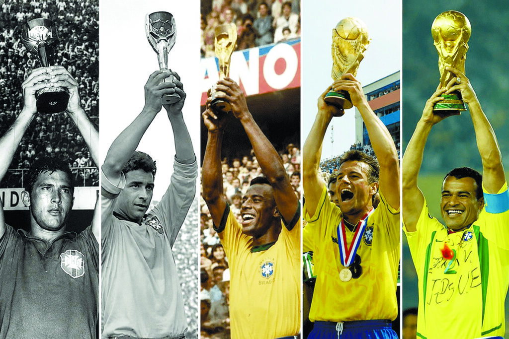
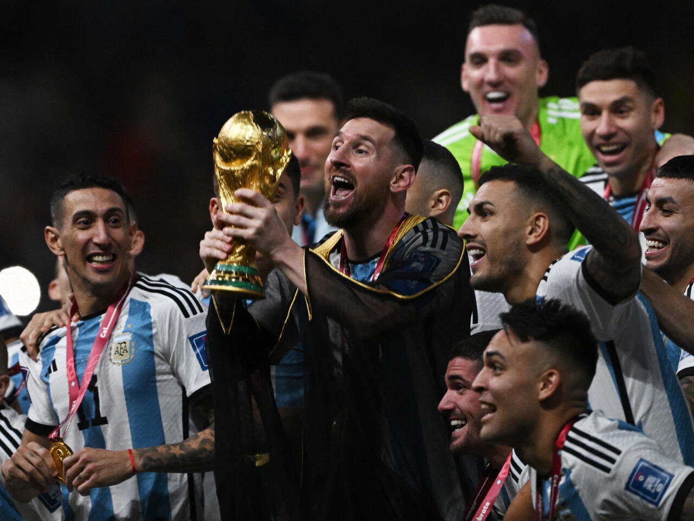

Los Reyes de la CopaGanar una Copa del Mundo es el logro más alto y prestigioso para cualquier futbolista y nación en el planeta. A lo largo de los años, muy pocas selecciones han tenido el honor de levantar este trofeo. Brasil se mantiene firme en la cima como el máximo ganador de la historia con cinco campeonatos mundiales, seguido de cerca por potencias como Italia y Alemania con cuatro títulos cada una. Grandes Dominadores RecientesLas últimas ediciones de la competencia han demostrado que el nivel del fútbol global es cada vez más competitivo. Selecciones de élite como Francia, España y Argentina han logrado dominar los torneos recientes gracias a proyectos deportivos muy serios y a generaciones unidas de futbolistas extraordinarios que defienden el escudo de sus países con orgullo y disciplina.
  |